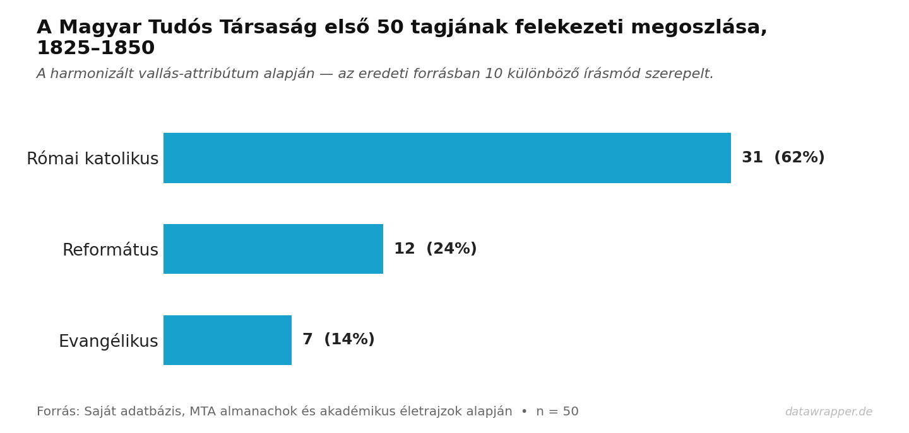
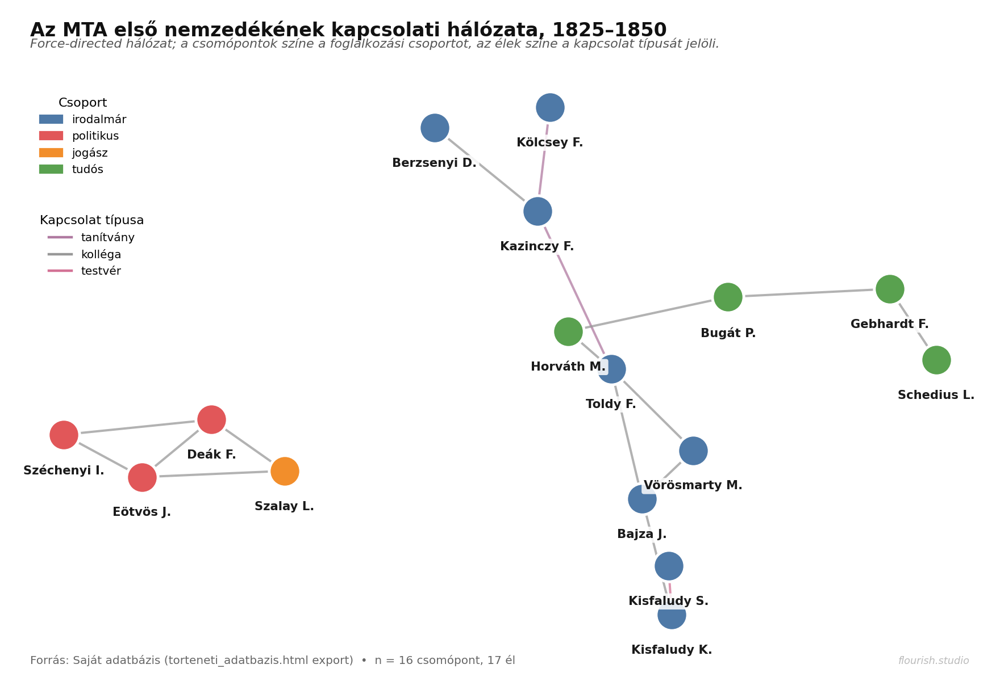

14 Adatvizualizáció — Flourish, Datawrapper és interpretáció
„Minden vizualizáció narratíva.”
Ebben a fejezetben két, webes böngészőben futó, kódolás nélküli vizualizációs platformot mutatunk be — a Flourish-t és a Datawrappert — a kötet korábbi fejezeteiből ismert adatokon. Mindkettőn végigmegyünk egy teljes munkameneten: adatbetöltés, ábratípus választása, finomítás, publikálás. Példaadatként az 11 fejezetben bevezetett MTA alapítói és első nemzedéke (1825–1850) prozopográfiai mintasor szolgál.
14.1 Miért kell két eszközt is megtanulni?
A történeti kutatás vizualizációs igényei két nagy csoportra oszlanak.
Publikációs grafika — tanulmány, monográfia, disszertáció figurája. Nyomtatásban is olvasható, fekete-fehérben is értelmezhető, egyértelmű, statikus, reprodukálható. Itt a Datawrapper az erősebb.
Interaktív, beágyazott felületek — online kiegészítő, honlap, konferencia-előadás képernyője. A felhasználó maga szűrhet, animáció, mozgó idősor, kattintható adatpont. Itt a Flourish a komolyabb választás.
A két eszköz nem versengő, hanem kiegészítő — ugyanazon adathalmazra a kutató mindkettőből készíthet különböző célú megjelenítést. A Datawrapper egyszerűbb és szigorúbb, a Flourish gazdagabb és szabadabb.
A kötet korábbi fejezeteiben két különböző eszköz-paradigmát láttunk: webes alkalmazás-szintű vizualizáció (D3 és Leaflet az ElitData böngészőjében, ld. 9.8), saját böngészőeszköz torteneti_adatbazis.html (ld. 11), és most a kódolás nélküli webes platformok jönnek. A választás nem abszolút sorrend, hanem a projekt mérete, a közönség és a reprodukálhatósági igény függvénye.
14.2 Flourish vs. Datawrapper — döntési mátrix
| Kérdés | Datawrapper | Flourish |
|---|---|---|
| Fő profil | hírlapi, tudományos grafika | interaktív „story”, adat-újságírás |
| Regisztráció | ingyenes, e-mail | ingyenes alapverzió + fizetős |
| Export | SVG, PNG, PDF (fizetős) | PNG, beágyazott iframe |
| Interaktivitás | mérsékelt (tooltip, szűrő) | erős (animáció, lapozás, scrollytelling) |
| Template-ek | kb. 20, konzervatív | 40+, gazdag (network, sankey, bar chart race, arc diagram) |
| Térkép | choropleth, szimbólum, lokátor | choropleth, pont, projektált, 3D-sfera |
| Tanulási görbe | enyhe | közepes |
| Ideális használat | cikkábra, statikus ábrázolás | online kiegészítő, prezentáció |
A legtöbb esetben a Datawrapper az első próba: gyors, egyszerű, publikáció-kompatibilis kimenetet ad. Ha az adatnak animációt, történetvezetést, komplex hálózatot vagy „bar chart race” mozgást szánunk, akkor a Flourish-ra érdemes váltani.
14.3 Az ábraválasztás logikája
Mielőtt bármelyik platformra feltöltenénk adatot, tisztáznunk kell, mi a vizualizáció kérdése. Ugyanarra az adatra többféle jó ábra készülhet — de rossz ábraválasztás mellett még a leggondosabb finomítás sem segít.
14.3.1 A kérdés típusa → ábratípus táblázat
| Kutatási kérdés típusa | Ajánlott ábra | Példa a kötet adataira |
|---|---|---|
| Megoszlás néhány (3–7) kategórián | Bar chart (vízszintes sáv) | MTA felekezeti megoszlás |
| Megoszlás sok (8+) kategórián | Horizontal bar chart vagy treemap | MDP foglalkozási kategóriák |
| Időbeli változás egy számon | Line chart | MTA-tagok évenkénti választási száma |
| Időbeli változás több kategórián | Stacked area / bar chart race | MDP foglalkozások 1945–1955 |
| Rangsor időben mozogva | Bar chart race | leggyakoribb elitcsoport évtizedenként |
| Két változó kapcsolata | Scatter plot | születési év vs. választási év |
| Eloszlás egyváltozós | Histogram / density | születési évek eloszlása |
| Földrajzi koncentráció | Choropleth map | egyházmegyei ösztöndíjasok (8) |
| Pont-jellegű földrajzi | Symbol map | MTA-tagok születési helyei |
| Entitások közötti hálózat | Network / force-directed | MTA kapcsolati gráf, ElitData-stílus |
| Áramlás A-ból B-be | Sankey diagram | foglalkozás-kategóriák átmenete időben |
| Hierarchikus kategóriák | Treemap / sunburst | MTA-osztály → foglalkozás-alcsoport |
14.3.2 Mit kerüljünk
- Pie chart 3-nál több szeleten — az arányokat az emberi szem rosszul becsli szögből. Ha megoszlás: bar chart.
- 3D oszlop / torta — kozmetikai torzítás, semmi előnyt nem ad.
- Kettős y-tengely két különböző skálán — ritkán indokolt, és majdnem mindig megtévesztő.
- Word cloud kvantitatív kérdésre — a betűhossz, nem csak a szám, befolyásolja a méretet.
14.3.3 Heurisztika: 30 másodperces teszt
Készítsünk el egy ábrát, majd tegyük le, és egy kolléga nézze meg harminc másodpercig. Utána tegyük fel neki három kérdést:
- Mit ábrázol?
- Mi a figurának az egy fő állítása?
- Melyik adatpont (vagy kategória) a legfontosabb?
Ha a válaszok különböznek attól, amit mi magunknak gondoltunk — az ábra nem a jó típus, vagy a finomításon múlik. Ez az eljárás a nehéz adatok megértésében rendkívül hasznos, és sokkal olcsóbb, mint utólag cserélni a figurát egy lektorált tanulmányban.
14.4 Datawrapper: teljes munkamenet az MTA-adaton
Az alábbiakban egy valós kattintás-sorrendben építjük fel az MTA első 50 tagjának felekezeti megoszlás-ábráját. A demonstrációs adatbázis (11) Vallás-attribútuma a harmonizálás után három kanonikus értékre csökkent: Római katolikus, Református, Evangélikus.
14.4.1 0. lépés: regisztráció és adat-előkészítés
A app.datawrapper.de oldalon email + jelszóval regisztráljunk. Az ingyenes csomag az akadémiai használathoz bőven elegendő.
Az adatunkat a Datawrapper CSV formátumban kéri. A legegyszerűbb a harmonizált táblát Excelben pivot-táblával aggregálni, vagy kézzel egy kis kétoszlopos segédtáblát készíteni:
Felekezet,Fő
Római katolikus,31
Református,12
Evangélikus,7(A konkrét számok a saját harmonizálás eredményétől függenek.)
14.4.2 1. lépés: New chart → Upload data
A dashboard bal felső sarkában „Create new” → „New chart”. A képernyő négy lapot mutat: Upload data → Check & describe → Visualize → Publish & embed.
Az Upload data lapon három bemeneti mód:
- Copy & paste (leggyorsabb) — Excelben jelöljük ki a két oszlopot,
Ctrl+C, a Datawrapper szövegmezőjébeCtrl+V. - Upload file —
.csvvagy.xlsxközvetlenül. - External link — ha az adat már publikus URL-en van.
Beillesztés után a jobb oldali előnézet azonnal megjeleníti a táblát. Kattintás: Proceed.
14.4.3 2. lépés: Check & describe
Itt a Datawrapper automatikusan felismeri az oszloptípusokat:
- Felekezet →
Text(kategória) - Fő →
Number
Ha valamelyiket rosszul azonosítja, a fejléc fölötti ikonra kattintva felülírhatjuk. Ebben az esetben semmi tennivaló. Proceed.
14.4.4 3. lépés: Visualize — ábratípus választása
A bal oldalon körülbelül 20 ábratípus közül választhatunk. A 14.3.1 logikája szerint: három kategória, abszolút számok, kategória-megoszlás — a Bar chart (vízszintes sáv) a jó választás. Nem a Column chart (oszlopdiagram), mert a felekezet-nevek nem férnének el a vízszintes tengelyen; nem a Pie chart, mert három szeletnél ugyan még olvasható, de a bar chartról az arány pontosabban leolvasható.
Kattintás a Bar chart sablonra — az ábra azonnal frissül.
14.4.5 4. lépés: Refine (finomítás)
Ez a Datawrapper legfontosabb lapja. Rendszerint három-négy beállítás érdemi:
- Appearance → Sort bars: Descending (nagyság szerint csökkenő). Így a domináns kategória kerül felülre — a könyvnek olvasható, önmagától beszélő ábrát ad.
- Value labels: Show value labels at end of bar. Az érték a sáv végén — nem kell a tengelyre nézni.
- Colors → Base color: semleges szürke vagy egyetlen kiemelő szín. Ha csak szám van (nem idő, nem politikai kategória), ne használjunk sok színt.
- Grid lines: a vízszintes rácsot vegyük le, a függőleges maradhat.
14.4.6 5. lépés: Annotate (címkézés)
Az akadémiai grafikához mind a négy mező kitöltése ajánlott:
- Title: A Magyar Tudós Társaság első 50 tagjának felekezeti megoszlása, 1825–1850
- Description: egy mondatos lead, pl. „A harmonizált vallás-attribútum alapján; az eredeti forrásban 10 különböző írásmód szerepelt.”
- Source: Saját adatbázis, MTA almanachok és akadémikus életrajzok alapján
- Byline: [Készítő neve]
- Notes: opcionális — itt érdemes megemlíteni a harmonizálási döntéseket vagy az n-t.
14.4.7 6. lépés: Layout / Design
Az ingyenes csomagban limitált, de a Layout lapon állítható: betűméret, témaszín, és hogy a figura „social share” változatához legyen-e külön crop. Publikációs célhoz a default téma szinte mindig jó — ne variáljunk.
14.4.8 7. lépés: Publish & embed
Publish chart gomb → a Datawrapper generál egy publikus URL-t (datawrapper.dwcdn.net/XYZ123/1/) és egy iframe-embed kódot. Ezen felül:
- PNG letöltés — az ingyenes csomagban is elérhető, cikkábraként felhasználható.
- SVG letöltés — csak a fizetős tervben. Ha SVG-re van szükség és az ingyenes csomagban vagyunk, a böngészőben az F12-es fejlesztői eszközökkel ki lehet menteni.
A publikált ábra nem törlődik automatikusan, és az URL tartósan érvényes — tehát feliratokban hivatkozhatunk rá.

Figure 14.1: A Datawrapper-munkamenet eredménye: a fenti lépések után előálló ábra illusztrációs változata. Nagyság szerint csökkenő sorrend, értékcímke a sáv végén, forrás- és n-megjelölés.
14.5 Flourish: teljes munkamenet az MTA-adaton
A Flourish-on most ugyanezt az adatot, de egy alapvetően más kérdéssel visszülük végig: az MTA tagjainak egymás közti kapcsolatait jelenítjük meg hálózatként. Ez a feladat Datawrapperben nem is megoldható — ezért jó illusztráció arra, hol van az átjáró a két eszköz között.
14.5.1 0. lépés: regisztráció és adat-előkészítés
A app.flourish.studio oldalon email + jelszóval regisztráljunk. A „Personal” ingyenes csomag publikus adatokhoz — akadémiai használatra — megfelelő; csak a privát projekt és a csapat-funkciók fizetősek.
A hálózati ábrához két CSV kell:
nodes.csv — a személyek (csomópontok):
id,label,csoport
mta_kazinczy,Kazinczy Ferenc,irodalmár
mta_kolcsey,Kölcsey Ferenc,irodalmár
mta_toldy,Toldy Ferenc,irodalmár
mta_vorosmarty,Vörösmarty Mihály,irodalmár
mta_bajza,Bajza József,irodalmár
mta_eotvos,Eötvös József,politikus
mta_szalay,Szalay László,jogász
mta_kisfaludy_s,Kisfaludy Sándor,irodalmár
mta_kisfaludy_k,Kisfaludy Károly,irodalmár
...edges.csv — a kapcsolatok (élek):
source,target,type
mta_kazinczy,mta_kolcsey,tanítvány
mta_kazinczy,mta_toldy,tanítvány
mta_vorosmarty,mta_bajza,kolléga
mta_eotvos,mta_szalay,kolléga
mta_kisfaludy_s,mta_kisfaludy_k,testvérA két táblát a torteneti_adatbazis.html eszközből exportált CSV-k utófeldolgozásával is elő lehet állítani — a Rekordok fülből az id és a név kiszedhető, a Kapcsolatok fülből pedig az élek listája.
14.5.2 1. lépés: New visualization → sablon-választás
A dashboard tetején „New visualization” gomb. A Flourish most nem az adattal, hanem a sablonnal indít — ez fontos paradigma-különbség a Datawrapperhez képest. Négy fő kategória: Charts & maps, Hierarchies & networks, Time, flow, change, Story.
A kapcsolati hálózathoz a Hierarchies & networks → Network graph sablont választjuk. A sablon egy példa-adattal nyílik meg — látjuk, hogyan működik, mielőtt a sajátunkat feltöltjük.
14.5.3 2. lépés: Data lap — CSV-betöltés
A felső sávban két lap: Preview (ábra) és Data (táblázat). A Data lapra váltva két sub-fület találunk: Points (csomópontok) és Links (élek). Ez pontosan megfelel a nodes.csv és edges.csv szerkezetnek.
- Points fül → Upload data →
nodes.csv. Ha már van példa-adat, a Flourish megkérdezi, hogy cseréljük-e: Replace all data. - Links fül → Upload data →
edges.csv.
14.5.4 3. lépés: Column bindings — oszlop → szerep leképezés
A Flourish a sablonban elvárt „szerepeket” (role) a feltöltött adat oszlopaival köti össze. A jobb oldali Settings panelen:
- Points → Name (identifier) =
id - Points → Label =
label - Points → Colour by =
csoport - Points → Size by = (opcionálisan üres, vagy egy mérőszám-oszlop)
- Links → Source =
source - Links → Target =
target - Links → Type (for colour) =
type
Preview-ra visszalépve: a force-directed szimuláció elindul, a csomópontok a csoport szerint színeződnek, az élek a típus szerint.
14.5.5 4. lépés: Preview és finomítás
A Settings panelen a leggyakoribb beállítások:
- Physics → Link distance: ha túl közel vannak a csomópontok, növeljük.
- Physics → Charge: taszítóerő; ha túl zsúfolt, állítsuk negatívabbra.
- Labels → Always show labels: kikapcsolva csak hoverre jön, bekapcsolva mindig. Kutatási felületként bekapcsolás ajánlott, publikációs screenshotban kikapcsolás lehet tisztább.
- Colours → Categorical palette: a csoport-színeket módosíthatjuk; felekezeti vagy politikai adatnál ne legyen piros/zöld-alapú paletta.
14.5.6 5. lépés: Header és footer (Annotate)
A Flourish a cím, leírás és forrás megadását külön panelen, a Header és Footer blokkban kéri:
- Header → Title: Az MTA első nemzedékének kapcsolati hálózata, 1825–1850
- Header → Subtitle: rövid leírás.
- Footer → Source: forrás, n, adatgyűjtés időpontja.
- Footer → Notes: módszertani megjegyzés.
14.5.7 6. lépés: Publish → share
Jobb felső sarokban „Export & publish”. Három kimenet érhető el:
- Public URL:
public.flourish.studio/visualisation/XXXXXX/— bárki megnyithatja. - Embed code: iframe, tanulmány online kiegészítőjébe illeszthető.
- PNG download: a pillanatnyi nézet állóképe.
Az ingyenes csomagban a vizualizáció publikus — bárki, akinek van URL-je, megnyithatja. Privát megosztáshoz fizetős terv kell.
14.5.8 7. lépés: amikor több figurát egyesítünk — Story
Ha a hálózat mellé még egy idővonalat és egy statisztikát is szeretnénk egyetlen görgetős oldalon megjeleníteni: a dashboard „New story” gombjával több korábban mentett vizualizáció fűzhető össze, és minden lépéshez külön cím + szöveg rendelhető. Ez a Flourish legerősebb funkciója publikációs kiegészítőként.

Figure 14.2: A Flourish Network graph sablon eredménye: az MTA első nemzedékének kapcsolati hálózata illusztrációs változatban. Csoport szerinti színkódolás (irodalmár, politikus, jogász, tudós), kapcsolat-típus szerinti élszínezés. Interaktív változatban a csomópontok húzhatók, a címkék hoverre jelennek meg.
14.6 Vizualizáció-etika és kritika
A jó eszköz nem véd meg a rossz vizualizációtól. A leggyakoribb manipulatív vagy félrevezető minták:
| Probléma | Miért baj? |
|---|---|
| Csonkolt y-tengely | apró különbségek drámainak látszanak |
| Kategória-sorrend ábécé / adatbeviteli sorrend szerint | elfedi a nagyság szerinti rangsort |
| 3D-s oszlopdiagram | a háttérben lévő oszlopok optikailag kisebbnek tűnnek |
| Aránytalan ikonméret (pictogram) | a terület kétszeres, ha a sugár is az → négyszeres szám-érzet |
| Szín-szemantika figyelmen kívül hagyása | piros = „rossz”, zöld = „jó”; felekezeti térképen, politikai diagramon komoly félreolvasáshoz vezet |
| Hiányzó forrás és n | az olvasó nem tudja, mennyire bízhat a figurában |
A Datawrapper több ilyet alapból kizár (nem enged 3D-t, a forrás-sort kötelezően kitölteti); a Flourish szabadabb, ezért a kutatóra nagyobb felelősséget hárít.
Ellenőrző kérdések a publikálás előtt:
- Egyértelmű-e a grafikon címéből, mire kell figyelni?
- Szerepel-e a forrás, az n (elemszám), és az adatgyűjtés időpontja?
- Fekete-fehér fénymásolatban is értelmes marad-e?
- Egy olvasó, aki az adatot nem ismeri, mi alapján félreértené?
- Mi az, amit a vizualizáció elfed (pl. időbeli változás egy pillanatkép mögött, nemi aránytalanság, regionális eltérés)?
14.7 Kutatási munkafolyamat két lépésben
Tipikus projektmenet egy történeti korpusznál:
- Feltáró szakasz: a kutató Datawrapperben gyorsan készít 5–10 „vázlat-grafikont” ugyanarról az adatról — más-más nézőpontból (felekezet, foglalkozás, évtized, régió). Ezek nem publikálásra készülnek, hanem a kutatási kérdés finomítására.
- Publikációs szakasz: kiválasztjuk azt a 2–3 figurát, amely a tanulmányban szerepelni fog, és ezeket végigvisszük a 14.6 checklistán. Ha interaktív online kiegészítőt is szeretnénk, egy-két kulcsfigurát átviszünk Flourish-ba.
Ez az eljárás hasonlít a kvalitatív kutatásból ismert „kódolás → memoírás → véglegesítés” folyamathoz: a vizualizáció is iteratív.
14.8 Összehasonlítás a korábbi fejezetekkel
| Eszköz | Mikor? | Milyen készség kell? | Reprodukálhatóság |
|---|---|---|---|
| D3.js / Leaflet (ElitData-stílus) | egyedi webes felület, nagy projekt | JS-ismeret, build-lánc | közepes (kód igen, build-lánccal) |
torteneti_adatbazis.html (ld. 11) |
saját prozopográfiai projekt, feltáró munkafázis | nem kell kód | közepes (CSV-export) |
| Datawrapper | publikációs grafika, gyors vázlat | nem kell kód | közepes (CSV + PNG/SVG) |
| Flourish | interaktív történet, prezentáció, scrollytelling | nem kell kód | alacsonyabb (iframe-függő) |
A választás a kimenet típusának kérdése: webes alkalmazás a nagy projektekhez, saját HTML-eszköz a munkaadatbázishoz, Datawrapper / Flourish a publikus kommunikációhoz és az akadémiai figurához.
14.9 További olvasnivaló
- Alberto Cairo: The Truthful Art (New Riders, 2016). Az adat-újságírás módszertanának alapkönyve.
- Cole Nussbaumer Knaflic: Storytelling with Data (Wiley, 2015). Pragmatikus, üzleti fókuszú, de a tanácsai akadémiai figurára is átültethetők.
- Edward Tufte: The Visual Display of Quantitative Information (2. kiadás, Graphics Press, 2001). A klasszikus — minimalizmus, „data-ink ratio”.
- Datawrapper Academy: https://academy.datawrapper.de/ — rövid, gyakorlati tutoriálok.
- Flourish Help: https://help.flourish.studio/ — sablononként lépésenkénti leírás.
- Datawrapper Blog: https://blog.datawrapper.de/ — a „Weekly chart” rovatban számos historikus és társadalomtudományi példa található, amelyek módszertani szempontból is tanulságosak.